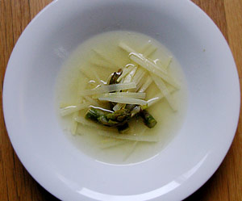

Spargel-consommé
5 von 6800 g weisser badischer spargel schälen und in kleine stücke schneiden, die spitzen jedoch am stück lassen und beiseite legen. die spargelstücke in butter anschwitzen, mit salz und ein wenig zucker würzen. mit einem dl trockenem weisswein ablöschen. 1,5 liter gemüseboullion dazugen und 30 minuten kochen. durch ein sieb giessen und über nacht im kühlschrank ruhen lassen. nun das fett abschöpfen. mit einem eigelb klären (unter ständigem rühren aufkochen, schaum abschöpfen und nochmals eine stunde abkühlen lassen. durch ein sieb giessen und mit den spargelspitzen ca. 10 minuten kochen.
